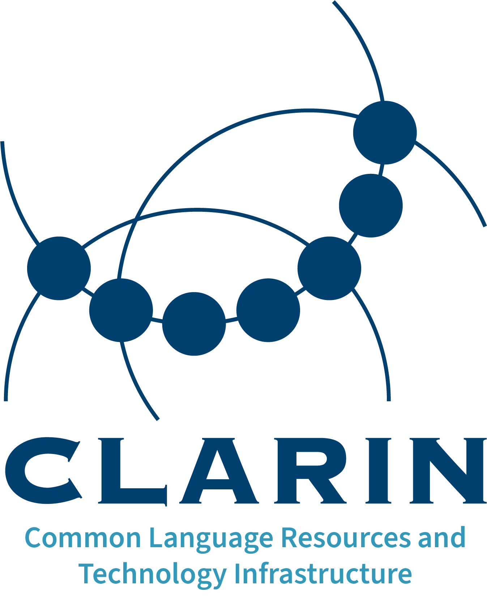

CLARIN-NL is the Dutch national node of the European research infrastructure for language as social and cultural data, CLARIN-ERIC
CLARIN stands for Common Language Resources and Technology Infrastructure and ERIC stands for European Research Infrastructure Consortium (an international legal entity established by the European Commission in 2009).
CLARIN supports research based on language resources by offering a wide range of digital language data, including written and spoken corpora, lexica, multi-modal resources and databases, as well as software tools and services to process the data. See the CLARIN Virtual Language Observatory and the CLARIN Resource Families for full details.
In addition, CLARIN offers services for depositing, managing, citing, searching and processing language data. It is also an ecosystem for knowledge exchange and training. See the CLARIN centres for more details.
The majority of operations, services and centres of the CLARIN infrastructure is provided and funded by the national consortia in the countries that have joined CLARIN ERIC, as well as by associated centres. Members can access resources through a single sign-on, while many resources are openly available to wider communities. CLARIN is strongly committed to Open Science and the FAIR principles.
The vision of borderless and seamless interoperability between data and services is further realised through CLARIN’s alignment with emerging cloud platforms such as the European Open Science Cloud (EOSC) [link] and the SSH Open Marketplace [link].
The Netherlands joined CLARIN-ERIC right from the start in 2012 and has played a key role in the infrastructure ever since.
Within the Netherlands, CLARIN-NL and DARIAH-NL (the Dutch counterpart of the Digital Research Infrastructure for the Arts and Humanities DARIAH-ERIC) have joined forces in CLARIAH-NL, the Common Lab Research Infrastructure for the Arts and Humanities.
Contact: clarin-nl@ivdnt.org